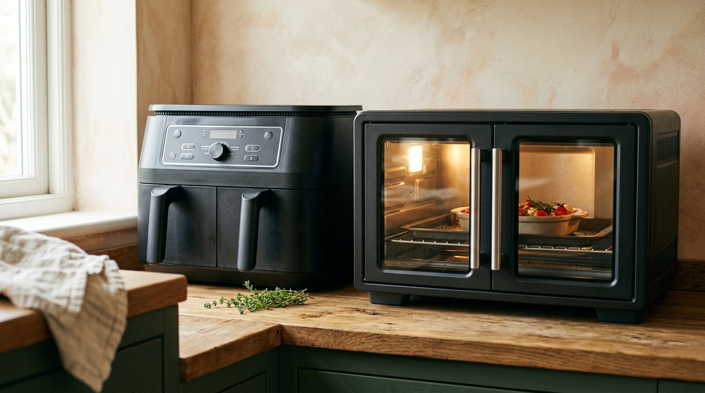

Three machines, three different jobs
Three air fryers, and the one question that picks between them
A dual-basket drawer, a big single basket, and a French-door oven that happens to air-fry. They are not competitors, and any page that ranks them 1–2–3 is ranking three different jobs.
Air fryers are sold on capacity in quarts and chosen on something else entirely: whether you cook two things at once, one big thing, or a tray of flat things. All three units here do the same headline task and are built completely differently to do it.
The picks
What each one is actually for
 CHEFMAN
CHEFMAN
Chefman 6 qt dual basket
Two baskets, two temperatures, one finish time.
 CHEFMAN
CHEFMAN
Chefman 8 qt TurboFry
One deep basket for big single batches.
 Emeril Lagasse
Emeril Lagasse
Emeril Lagasse 26 qt French door
One big cavity, a door instead of a drawer.
Side by side
What actually differs
Every value is the manufacturer’s stated claim, or a deliberate blank.
| Chefman 6 qt dual basket ASIN B0CDY277D3 | Chefman 8 qt TurboFry ASIN B08DKYBTPH | Emeril Lagasse 26 qt French door ASIN B09B7SB46R | |
|---|---|---|---|
| Format | Dual basket | Single XL basket | French-door oven |
| Stated capacity | 6 qt | 8 qt | 26 qt |
| Baskets | 2 independent, 3 qt each | 1 XL basket | One oven cavity |
| Viewing window | Stated | — not stated | Stated |
| Presets stated | — not stated | — not stated | 24 one-touch |
| Stated top temperature | — not stated | 450°F (listing claim) | — not stated |
| Counter footprint | — not stated | — not stated | — not stated |
| Wattage | — not stated | — not stated | — not stated |
| Best for | A household that regularly cooks two different things at once — protein in one basket, vegetables in the other — and wants to finish them together. | Big single batches — a whole chicken’s worth of wings, a full tray of fries — where splitting across two baskets would be a nuisance. | Anyone who wants one machine to roast, toast and air-fry, and who has the counter depth for a French-door oven rather than a tall basket unit. |
| Skip it if | You mostly cook one large item, or you want the appliance to still be working in three years. Two smaller baskets split a single batch, and durability is the single worst-rated theme on its own listing. | You regularly cook two foods that need different temperatures at the same time, or your kitchen circuit is already busy — this is the only unit here whose listing states a wattage at 120 V, and it states two different ones. | Your counter is shallow, you want something you can lift out and wash in a standard sink, or you expect a countertop oven to survive several years. Reviews of this listing are dominated by complaints about the heating element failing. |
| Full page | Read the pick → | Read the pick → | Read the pick → |
| Listing | Amazon · B0CDY277D3 | Amazon · B08DKYBTPH | Amazon · B09B7SB46R |
Footprint and wattage are the two figures most likely to change a decision, and the two the listings do not state in the data this desk could read. They are blank on purpose rather than estimated — check the product manual before ordering.
Read before you choose
Guides for this category
Basket or oven-style air fryer: what should you compare?
Two machines, both called air fryers, doing different jobs.
A no-hype checklist for comparing air fryer capacity
Manufacturers quote quarts.
Cleanup and counter space: the trade-offs to assess
The two costs nobody compares when they buy an air fryer: how much of the sink it takes, and how much of the counter it permanently occupies.